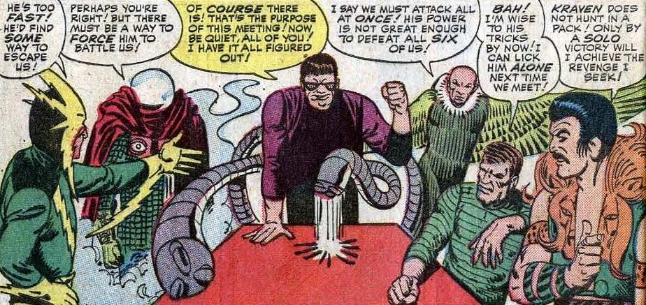
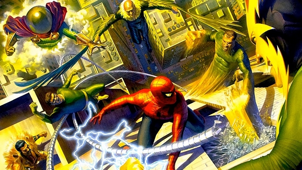

Clad in a green suit and pumpkin bombs, there's a terror flying around New York wreaking havok. With pointy ears, and a laugh that will make your hair stand up, we are now referring to him as the Green Goblin!
Full Story on Page 4Excelsior
Daily Bugle's Blog
New York's Page for your Friendly Neighborhood
Who or What is the Green Goblin?!
Uh Oh! New York's baddest, together?!
The Sinister Six
After suffering three defeats in a row from Spider-Man, Doctor Octopus is separated from his tentacle pack. After his tentacle pack breaks free and helps Doctor Octopus get out of prison, he contacts every known supervillain that had crossed paths with Spider-Man. Only Vulture, Electro, Kraven the Hunter, the original Mysterio, and Sandman respond. As none of the members are willing to relinquish the honor of killing Spider-Man themselves, they decide to challenge Spider-Man individually with the order in which they face him determined by random drawing. The Sinister Six kidnap Daily Bugle secretary Betty Brant and Aunt May, holding them hostage in order to force Spider-Man to confront them. Spider-Man defeats the Sinister Six one-by-one, mocking their decision to battle him individually instead of as a team.
In The Amazing Spider-Man #334-339, Doctor Octopus recruits Electro, Mysterio, Sandman, and Vulture, along with the demonic Hobgoblin (since Kraven the Hunter had died) as part of his plan to take over the world. However, this was a trick, part of a larger plan by which Octavius alone would be the master of the world. The Sandman, who at this point in his career had reformed and was blackmailed into joining, aids Spider-Man in defeating the Sinister Six, and ultimately stopping Octavius' plans to conquer the world.

Allies
Major Villains
Otto Octavius or Doctor Octopus
Known to be over a few hundred years old, Logan is a very rare mutant; his healing ability allows him to regenerate from any wound: he was literally torn in half by the Hulk. He is also equipped with a set of claws, heightened sense of smell and hearing. Feral Senses if you will. Logan is a part of the X-Men. And, has also been a part of other factions such as X-Force.
Venom, the Symbiote
Known to be over a few hundred years old, Logan is a very rare mutant; his healing ability allows him to regenerate from any wound: he was literally torn in half by the Hulk. He is also equipped with a set of claws, heightened sense of smell and hearing. Feral Senses if you will. Logan is a part of the X-Men. And, has also been a part of other factions such as X-Force.